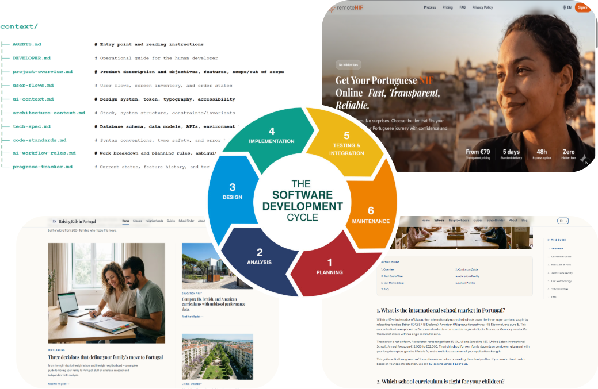
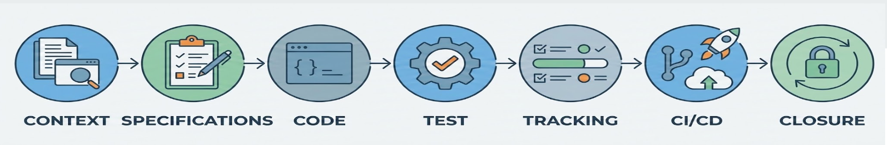
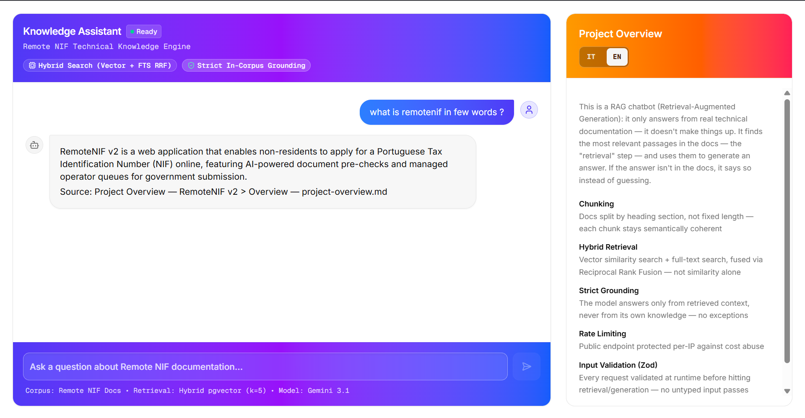
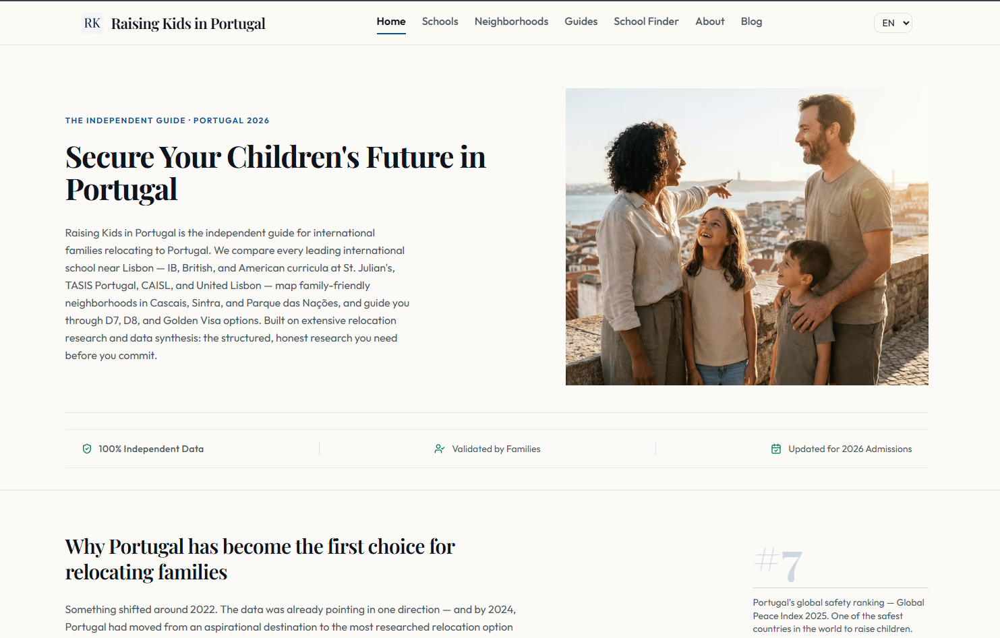
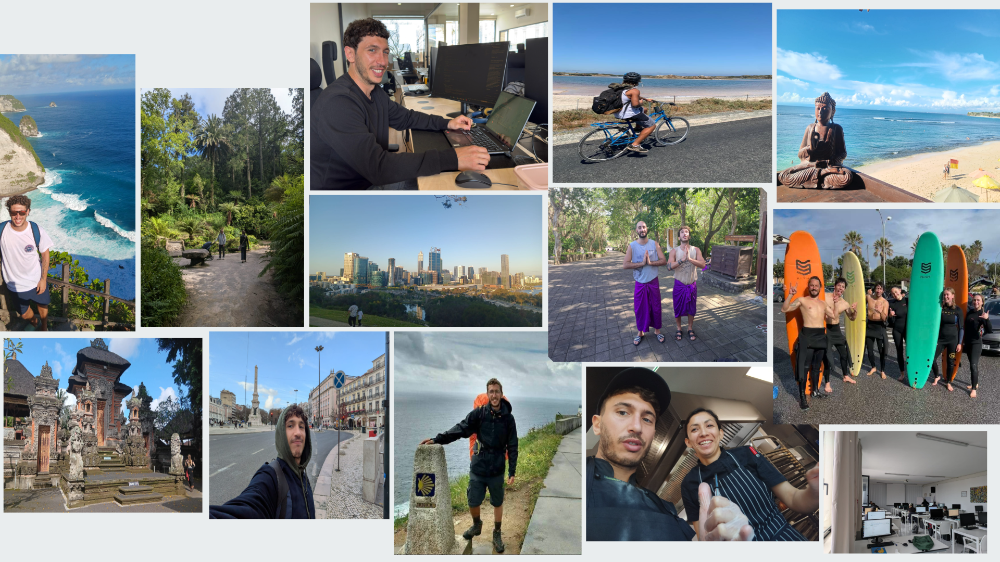

Utilizzo una metodologia Specification-Driven che integra il Software Development Life Cycle con l’orchestrazione di agenti AI.
La specifica viene prima del codice. L'agente AI implementa dentro confini scritti, verificabili, versionati.

Applicazione web full-stack, ottimizzata SEO/GEO, disponibile in 4 lingue. Digitalizza l'ottenimento del NIF portoghese per i non residenti: pagamenti Stripe, pre-analisi AI dei documenti, tre ruoli e una macchina a stati end-to-end.
Next.js · Supabase · Drizzle ORM · Stripe · Resend · Zod · GroqChatbot RAG standalone che risponde solo dai documenti caricati, con chunking strutturale, hybrid search su pgvector e generazione in streaming.
Next.js · Supabase · Google Gemini API · Vercel AI SDK · Upstash Redis
Un sito multilingue di contenuti e lead generation che aiuta le famiglie internazionali a trasferirsi in Portogallo, trasformando le ricerche su scuole e quartieri in contatti per un'agenzia di relocation.
Next.js · TypeScript · Tailwind CSS · Framer Motion · Vercel
Consulenza clienti nel ramo auto, preventivi, rinnovi e back office. Senso di responsabilità e attenzione al dettaglio.
Cinque anni nella ristorazione: adattamento, problem solving e comunicazione interculturale ad alto ritmo.
Prodotti end-to-end pronti per la produzione su Next.js e Supabase, multilingua SEO/GEO, sviluppo assistito da AI.

Il mio percorso non è stato lineare, e oggi considero questa la mia risorsa più preziosa. Ho costruito la mia esperienza vivendo in contesti radicalmente diversi — dall'Australia all'Asia a diverse realtà europee — affrontando settori che vanno dall'amministrazione all'ospitalità, fino allo sviluppo software.